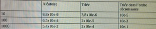

Durant cette année, nous avons vu deja plusieurs algorithmes, parmis ceux ci, des algorithme de tries dont celui de recherche Dichotomique.Son principe est que :
-il divise la liste en 2, il compare si element du milieu est egal a celui que l’on cherche.
-si element rechercher est plus grand que l’element central, il va que analyser la partie de droite(element plus grand), sinon il analysera que les elements plus petit.
Le tableau devient de plus en plus petit car on refait les étapes, cela permet d’enlever la moitier des données d’un coup ce qui le rends beaucoup plus rapide.
Lien vers algo dichotomie
Dans le tri par selection on cherche a classer les éléments dans l’ordre croissant, on prends le premier élément on le compare avec les autres, si un de ceux si est plus petit ,il prend alors la place du plus petit et ainsi de suite pour chaque élément de la liste.
Lien vers algo dichotomie
Dans le tri par insertion on assigne le deuxieme élément du tableau à « VT », stant que la premiere valeur du tableau est positive ou égale a 0 et que « VT ».La deuxieme valeur du tableau prends la valeur de la premiere et la premiere la valeur de la deuxieme,sinon la premiere valeur prends juste celle de la VT.On prends l’éléments suivant et rebelotte . Cela permet d’avoir les premiers termes trié qui forme une sous liste triée avec le premiers éléments qui sont passer dans l’algorithme et une seconde sous liste non triée.
On remarque que si la liste est triée, on a juste a la parcourir est sa compléxiter est donc linéaire O(n).(dans le meilleur des cas) Dans le pire des cas si la liste est rangée dans l’ordre décroissante, il faut donc inverser chaque terme et la complexiter de l’algorithme devient donc quadratique O(n²). Grace au temps que met l’algorithme afin de s’executer, on visualise mieux que c’est plus compliquer lorsque la liste n’est pas trié voir pire dans l’ordre décroissant. Grace au tableau on apperçoie plus clairement sa complexiter lorsque l’algorithme est trié dans l’ordre décroissante. Lorsque l’on multiplie par 10 le nombre d’élément dans le tableau, on multiplie par 1OO le temps d’execution.
Lien vers algo dichotomie
Liens vers index
Liens vers rapport